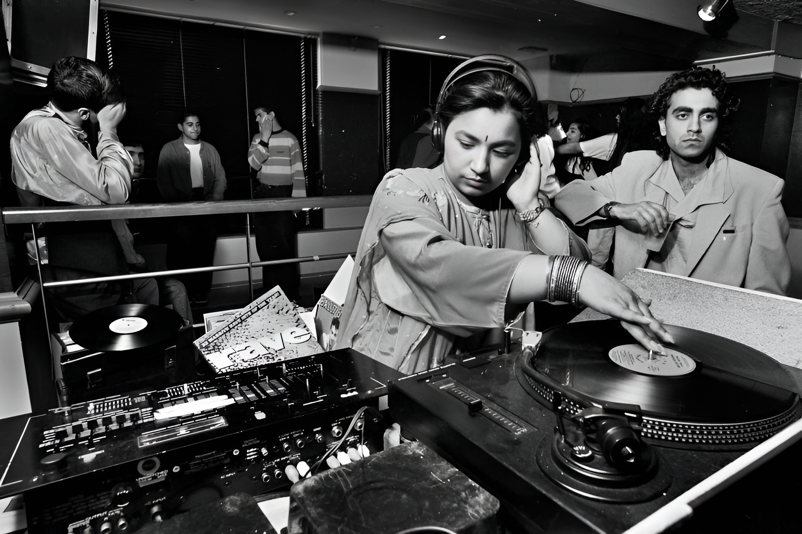

Phase 03
1990s
"The Asian Underground"
Experimental · Rebellious · Political
The Golden Era. A new generation of UK-born South Asians blend heritage with Jungle, Dub, and Hip-Hop. New genres pop up. Apache Indian invents "Bhangramuffin." Bally Sagoo puts Bollywood in the UK Top 40. Talvin Singh wins the Mercury Prize — Tabla over Drum & Bass.
Defining Moment
Anokha club nights at the Blue Note, London — Talvin Singh makes the diaspora sound cool to the mainstream.
New Genres
Bhangramuffin — Bhangra rhythms fused with Jamaican Dancehall, UK Punjabi Garage - Folk punjabi beats layered with the sounds of the enormously popular UK garage sound.